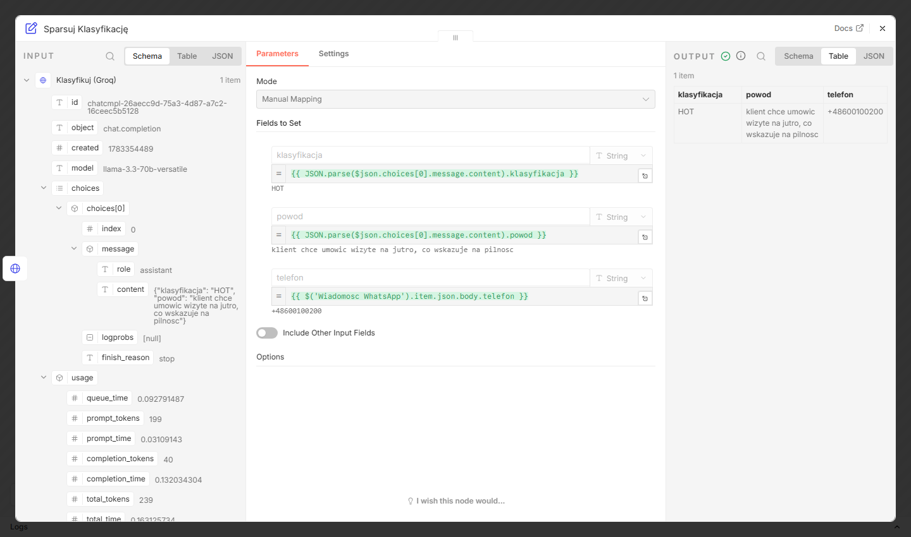
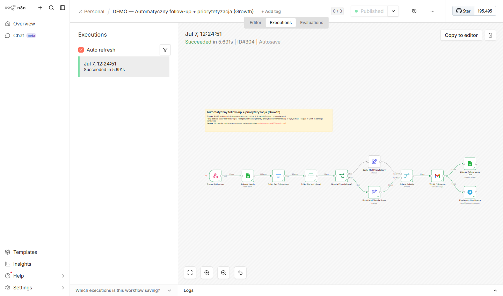
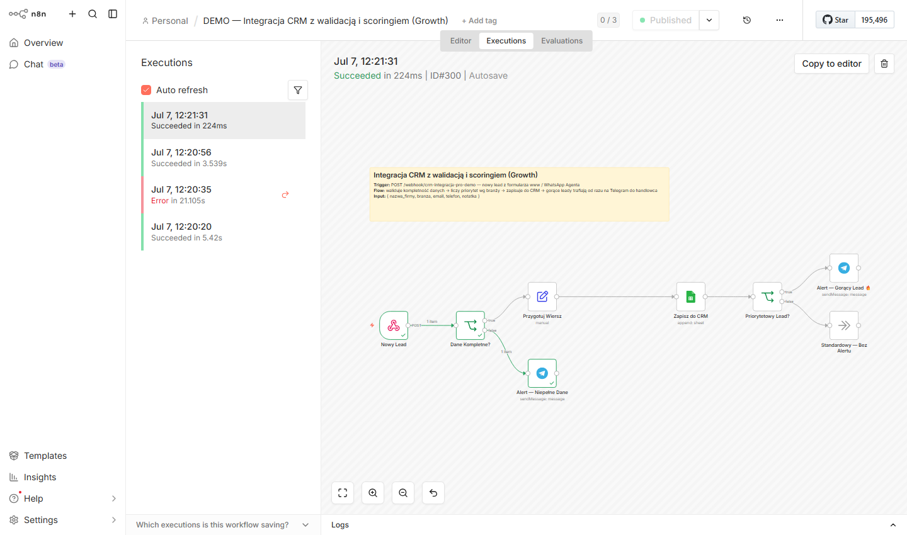
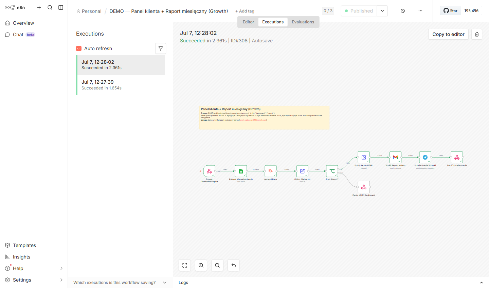
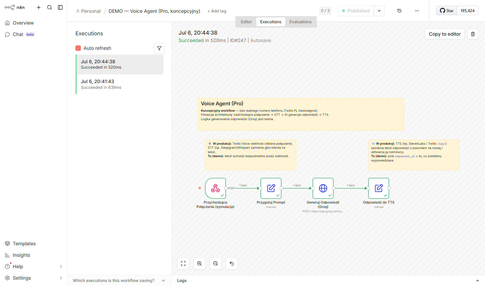
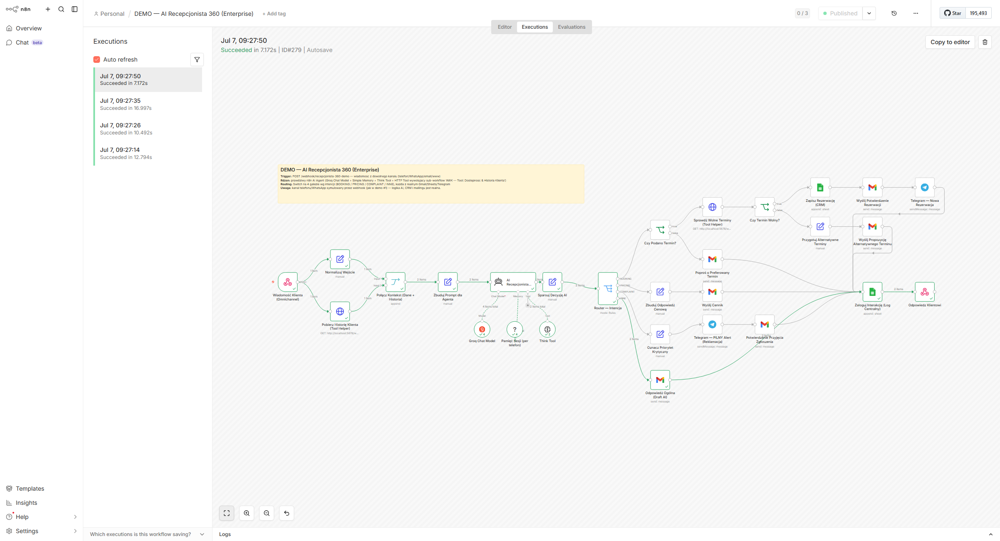
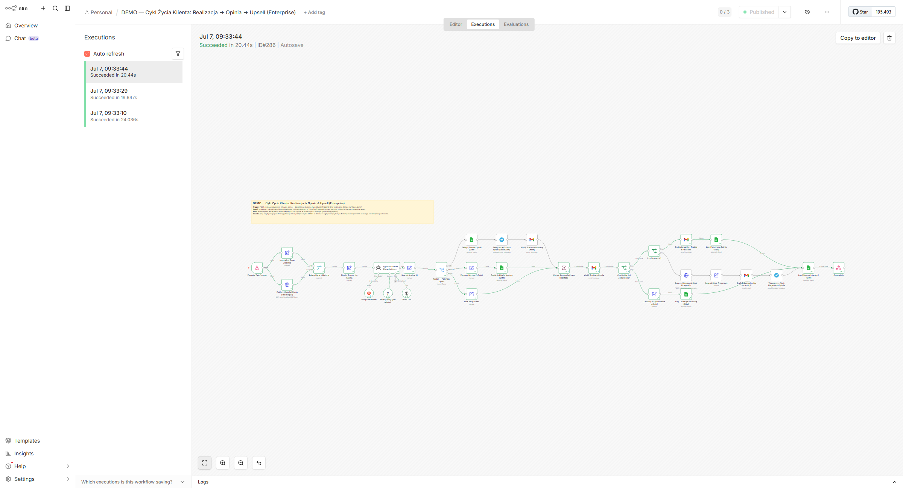
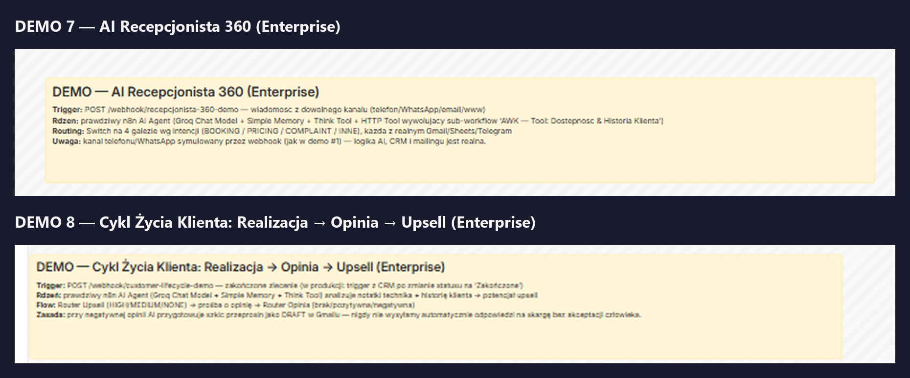

AWK Media Solutions buduje systemy AI szyte na miarę: obsługa klientów, zarządzanie leadami, przypomnienia — żeby Twoja firma działała sprawniej, bez zatrudniania kolejnej osoby.
Umów bezpłatną konsultacjęNie sprzedajemy oprogramowania. Budujemy działające systemy szyte na miarę Twojego biznesu.
Zapytania z formularza, maila czy strony — automatycznie klasyfikowane, przypisywane i obsługiwane bez Twojego udziału.
Od pierwszego kontaktu przez follow-upy aż do umówionego spotkania — bez ręcznego pilnowania.
Calendly, Gmail, Google Sheets, CRM, SMS — wszystko rozmawiające ze sobą automatycznie.
Wirtualny asystent odpowiadający na pytania klientów 24/7 — na stronie www, przez chat lub email.
Zawsze aktualny widok na wyniki firmy — bez ręcznego zbierania danych.
Nowoczesne strony www dla firm usługowych — wizytówki, landing pages, strony ofertowe. Gotowe do połączenia z systemami automatyzacji od razu po wdrożeniu.
Gdy standardowe rozwiązania nie wystarczą — budujemy w pełni dedykowany system zaprojektowany pod unikalne procesy Twojej firmy.
SMS i maile do klientów wysyłane automatycznie we właściwym momencie.
Każda firma usługowa z 2–30 pracowników, która obsługuje powtarzalne zapytania i procesy.
Prawdziwe systemy, które budujemy — kliknij, żeby zobaczyć działające demo w akcji. Większość projektów zwraca się w 3 tygodnie do 3 miesięcy.
Przeciętny klient oszczędza 2–5 godzin tygodniowo na ręcznej obsłudze procesów, które spokojnie może wykonać system.
Twój system obsługuje 10× więcej zapytań niż wcześniej — bez nowego etatu, bez nadgodzin.
Odpowiedź w ciągu minut zamiast godzin — to więcej podpisanych umów i mniej utraconych szans.
Setup jednorazowy + stały miesięczny retainer (utrzymanie, monitoring, rozwój) — retainer jest częścią każdego pakietu od pierwszego dnia, nie opcją dokupywaną później.
| Pakiet | Setup | Retainer/mies. | Zakres |
|---|---|---|---|
| Starter | 4 000 zł | 800 zł | Agent AI WhatsApp/Messenger 24/7 — kwalifikuje leada, powiadamia handlowca gdy lead jest gorący |
| Growth | 8 000 zł | 1 500 zł | Wszystko ze Starter + automatyczny follow-up, integracja CRM, panel klienta z dashboardem, miesięczny raport |
| Pro | 15 000 zł | 3 000 zł* | Wszystko z Growth + Voice Agent (odbiera telefon zamiast recepcji), priorytetowe wsparcie |
| Enterprise | wycena indywidualna | wycena indywidualna | Prawdziwy AI Agent (pamięć, wnioskowanie, własne narzędzia) zamiast reguł if/else — AI Recepcjonista 360 obsługujący cały cykl kontaktu, oraz agent analizujący zakończone zlecenia pod kątem sprzedaży dodatkowej i opinii klientów |
*Pro zawiera limit rozmów głosowych w pakiecie, nadwyżka rozliczana osobno. Płatność: 100% setupu z góry, retainer miesięcznie z góry. Wycena indywidualna po bezpłatnej konsultacji.
To nie są mockupy — to realnie działające workflow n8n, zbudowane i przetestowane.

Problem: zapytania z WhatsApp/Messenger czekają godzinami na odpowiedź.
Rozwiązanie: AI klasyfikuje wiadomość (HOT/WARM/COLD) i od razu wie, co z nią zrobić.
Efekt: błyskawiczna reakcja na gorące leady, 24/7.

Problem: leady bez odpowiedzi giną w skrzynce, a każdy lead traktowany jest tak samo — mimo że część jest wyraźnie pilniejsza.
Rozwiązanie: system sam wyławia leady bez follow-upu, rozgałęzia treść maila wg priorytetu branży, wysyła wiadomość, loguje akcję w CRM i alarmuje handlowca na Telegramie.
Efekt: żaden lead nie ginie, a gorące branże dostają inny ton komunikacji niż standardowe zapytania — bez ręcznej segmentacji.

Problem: formularze bywają niekompletne, a każdy nowy lead trafia do tej samej kolejki bez informacji, który wymaga natychmiastowej reakcji.
Rozwiązanie: workflow waliduje kompletność zgłoszenia, liczy priorytet leada wg branży, zapisuje do arkusza CRM i — tylko dla „gorących" leadów — wysyła natychmiastowy alert na Telegram do handlowca.
Efekt: handlowiec dostaje sygnał tylko wtedy, gdy naprawdę warto dzwonić od razu, a niepełne zgłoszenia nie giną bez śladu.

Problem: dashboard na bieżąco i raport miesięczny to zwykle dwa osobne, ręcznie sklejane procesy.
Rozwiązanie: jedno pobranie danych z CRM zasila oba wyjścia — tryb „dashboard" zwraca żywy JSON ze statystykami, tryb „raport" generuje pełny HTML i wysyła go mailem z potwierdzeniem na Telegramie.
Efekt: właściciel firmy widzi stan biznesu na żądanie i dostaje gotowe podsumowanie miesiąca — z jednego, spójnego źródła danych.

Problem: nieodebrane telefony to utraceni klienci.
Rozwiązanie: AI generuje odpowiedź na żywo (prawdziwe wywołanie modelu) na podstawie transkrypcji rozmowy; podłączenie do realnej linii telefonicznej (STT/TTS, numer telefonu) to kolejny krok wdrożenia, pokazany tu jako architektura, nie w pełni zautomatyzowany.
Efekt: gotowa logika odpowiedzi AI od pierwszego dnia, telefonię dopinamy przy wdrożeniu.

Problem: proste boty z regułami if/else nie radzą sobie z realną rozmową — nie pamiętają kontekstu i nie umieją zdecydować co dalej.
Rozwiązanie: prawdziwy AI Agent (nie wywołanie modelu z jednym promptem) z pamięcią rozmowy i własnym narzędziem sprawdzającym historię klienta — sam klasyfikuje wiadomość i rozgałęzia się na rezerwację terminu, wycenę, reklamację lub inne, każda ścieżka z realną wysyłką maila/Sheets/Telegrama.
Efekt: jeden system obsługuje cały pierwszy kontakt z klientem, 24/7, z pełnym logiem w CRM.

Problem: po zakończonym zleceniu nikt nie ma czasu przeanalizować notatek technika pod kątem dosprzedaży, ani systematycznie zbierać opinii.
Rozwiązanie: AI Agent czyta notatki i historię klienta, sam ocenia potencjał upsellu i przygotowuje treść oferty oraz prośby o opinię; przy negatywnej opinii agent przygotowuje szkic przeprosin — ale jako draft w Gmailu do akceptacji, nigdy nie wysyła automatycznie odpowiedzi na skargę.
Efekt: żadna szansa sprzedażowa ani zła opinia nie umyka, a decyzja o wrażliwej odpowiedzi zawsze zostaje przy człowieku.

Dokumentacja wbudowana bezpośrednio w workflow (sticky notes w n8n) — dokładnie to, co zobaczy każdy, kto otworzy go do edycji.
Podczas rozmowy analizujemy Twoje procesy i wskazujemy co można zautomatyzować jako pierwsze.
Umów bezpłatną konsultację